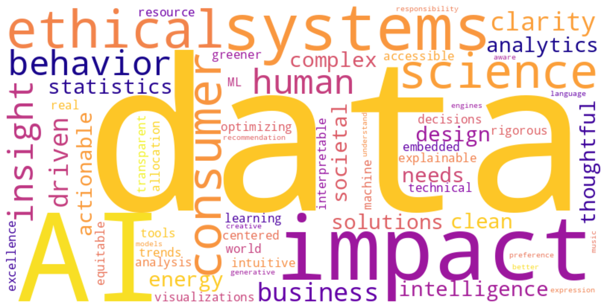

Scroll to see My Growing Path
“Looking back, this journey is filled with moments of growth, challenges overcome, and valuable lessons learned. Each step has shaped who I am today.”
2023.6
Joined Five Dimensions Energy LLC as a Senior Analyst—diving into energy modeling and business intelligence
2022.5
Graduated with Master’s degree in Data Science @ Columbia University
2021.9
Started Master’s program in Data Science @ Columbia University, learning from top leaders in AI, statistics, and applied analytics
2021.6
Graduated with Bachelor's degree in Statistics @ UCLA
2019.9
Started undergraduate journey @ UCLA, where my love for data, logic, and real-world problem solving took off
Hello, I'm Pinyi (Lydia) Yang
"Data doesn’t just describe the world—it drives it. I build the bridge between insight and impact."
I am a statistician 📊 by training, a data scientist 💻 in action, and a strategist 📈 at heart. With a background in energy analytics, business intelligence, and statistical modeling, I explore how data can shape smarter decisions in sectors like energy, sustainability, and finance. I aim to turn complex datasets into clear strategies that move industries forward.
I am currently a Senior Analyst at Five Dimensions Energy LLC, where I specialize in data-driven analytics to support strategic decision-making in the energy sector.
Previously, I completed my Master's in Data Science at Columbia University, where I gained rigorous training in statistical modeling, machine learning, and data systems, with applications ranging from energy analytics to business intelligence.
I also hold a Bachelor’s degree in Statistics from the University of California, Los Angeles (UCLA), where I developed a strong quantitative foundation and began exploring the intersection of data and real-world impact.
My professional and academic experiences have shaped a strong interest in using data science to solve complex, interdisciplinary problems—especially in domains like energy, finance, and sustainability.
Topics of Interest
My work is grounded in the conviction that data is a powerful tool for clarity and impact. I’m passionate about building data-driven systems that bridge business intelligence and societal needs through clean design, thoughtful analytics, and ethical AI.
With training in both statistics and data science, and experience across industries ranging from energy to consumer behavior, I develop solutions that transform raw data into actionable insights. I specialize in modeling complex systems, crafting explainable ML tools, and communicating results through intuitive visualizations.
I’m especially interested in creating interpretable machine learning models for real-world impact. Whether it’s helping energy companies make greener decisions, uncovering trends in consumer behavior, or optimizing resource allocation, my focus is always on combining rigorous analysis with accessible insight.
I believe that data systems should be equitable, transparent, and human-centered. As AI becomes further embedded in our lives, we must ask not only “what works,” but “what matters.” I strive to build frameworks that reflect both technical excellence and ethical responsibility.
I’m also intrigued by the intersections of data science and creative expression. From music recommendation engines to language-aware generative models, I’m inspired by how AI can learn from human preference—and, in turn, help us understand ourselves better.